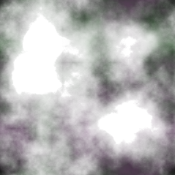

<!DOCTYPE html>
<html lang="en">
  <head>
    <meta charset="UTF-8" />
    <meta http-equiv="X-UA-Compatible" content="IE=edge" />
    <meta name="viewport" content="width=device-width, initial-scale=1.0" />
    <title>Document</title>
    <script src="../three/jsm/tween.umd.js"></script>

    <style>
      body {
        overflow: hidden;
      }
      /* .iframe-wrap {
        
      } */

      .iframe {
        width: 100%;
        height: 50%;
        overflow: hidden;
      }
    </style>
  </head>
  <body>
    <div id="container"></div>
    <div id="container2" class="iframe-wrap"></div>
    <!-- <button style="position: absolute; left: 100px">
      
    </button> -->

    <script type="module">
      import * as THREE from '../build/three.module.js'
      import { GLTFLoader } from '../three/jsm/loaders/GLTFLoader.js'
      import { FBXLoader } from '../three/jsm/loaders/FBXLoader.js'

      import { OrbitControls } from '../three/jsm/controls/OrbitControls.js'
      import {
        CSS2DObject,
        CSS2DRenderer,
      } from '../three/jsm/renderers/CSS2DRenderer.js'
      import {
        CSS3DRenderer,
        CSS3DSprite,
      } from '../three/jsm/renderers/CSS3DRenderer.js'
      let camera, renderer, composer, clock, controls

      let uniforms, mesh, mixer

      const container = document.getElementById('container')
      const container2 = document.getElementById('container2')

      // // 坐标系

      camera = new THREE.PerspectiveCamera(
        45,
        window.innerWidth / window.innerHeight,
        1,
        30000
      )
      camera.position.set(-15, 1540, 5)

      const scene = new THREE.Scene()

      var axesHelper = new THREE.AxesHelper(300)
      clock = new THREE.Clock()

      const textureLoader = new THREE.TextureLoader()

      var loader = new GLTFLoader()
      loader.load('../models/Pipe_CS/Test.gltf', function (fbx) {
        fbx.scene.position.set(-400, -400, -800)
        fbx.scene.scale.set(100, 100, 100)
        scene.add(fbx.scene)

        fbx.scene.traverse(function (mesh) {
          if (mesh.type == 'Mesh') {
            // mesh.material = material
          }
        })
        console.log('fbx: ', fbx)
        movecamera('A2_4_11F_MA001')
      })

      var fbxloader = new FBXLoader()
      fbxloader.load(
        '../models/JiGuangLou_Opacity_LightRing.FBX',
        function (fbx) {
          scene.add(fbx)
          mixer = new THREE.AnimationMixer(fbx)

          var AnimationAction = mixer.clipAction(fbx.animations[0])
          //console.log('object.animations: ', object.animations);
          AnimationAction.play()

          console.log('fbx: ', fbx)
          // movecamera('A2_4_11F_MA001')
        }
      )

      function movecamera(name) {
        var mesh = scene.getObjectByName(name)

        var p1 = {
          opacity: mesh.material.opacity,
          scale: 1,
        }
        var p2 = {
          opacity: 1,
          scale: 10,
        }

        var tween = new TWEEN.Tween(p1).to(p2, 10000)
        // .easing(TWEEN.Easing.Quadratic.InOut)
        tween.onUpdate(() => {
          mesh.material.opacity = p2.opacity
          mesh.scale.set(p2.scale, p2.scale, p2.scale)
        })
        // 开始动画
        tween.start().repeat(-1)
      }

      renderer = new THREE.WebGLRenderer({ antialias: true })
      renderer.setPixelRatio(window.devicePixelRatio)
      container.appendChild(renderer.domElement)
      renderer.autoClear = false

      var labelRenderer = new CSS3DRenderer()
      labelRenderer.setSize(window.innerWidth, window.innerHeight)
      labelRenderer.domElement.style.position = 'absolute'
      // 避免renderer.domElement影响HTMl标签定位，设置top为0px
      labelRenderer.domElement.style.top = '0px'
      labelRenderer.domElement.style.left = '0px'
      //设置.pointerEvents=none，以免模型标签HTML元素遮挡鼠标选择场景模型
      labelRenderer.domElement.style.pointerEvents = 'none'
      document.body.appendChild(labelRenderer.domElement)

      var CSS2DlabelRender = new CSS2DRenderer()
      CSS2DlabelRender.setSize(window.innerWidth, window.innerHeight)
      CSS2DlabelRender.domElement.style.position = 'absolute'
      // 避免renderer.domElement影响HTMl标签定位，设置top为0px
      CSS2DlabelRender.domElement.style.top = '0px'
      CSS2DlabelRender.domElement.style.left = '0px'
      //设置.pointerEvents=none，以免模型标签HTML元素遮挡鼠标选择场景模型
      CSS2DlabelRender.domElement.style.pointerEvents = 'none'
      document.body.appendChild(CSS2DlabelRender.domElement)

      //
      var ambientLight = new THREE.AmbientLight(0xffffff, 1)
      scene.add(ambientLight)

      controls = new OrbitControls(camera, renderer.domElement)

      onWindowResize()

      window.addEventListener('resize', onWindowResize)

      function onWindowResize() {
        camera.aspect = window.innerWidth / window.innerHeight
        camera.updateProjectionMatrix()

        renderer.setSize(window.innerWidth, window.innerHeight)
      }

      //

      animate()
      function animate() {
        requestAnimationFrame(animate)
        TWEEN.update()

        renderer.render(scene, camera)
        labelRenderer.render(scene, camera)
        // inset scene
        mixer.update(clock.getDelta())
        // renderer2.render(scene2, camera2)
        // renderer.render(scene, camera)
        render()
      }

      function render() {}
    </script>
  </body>
</html>
